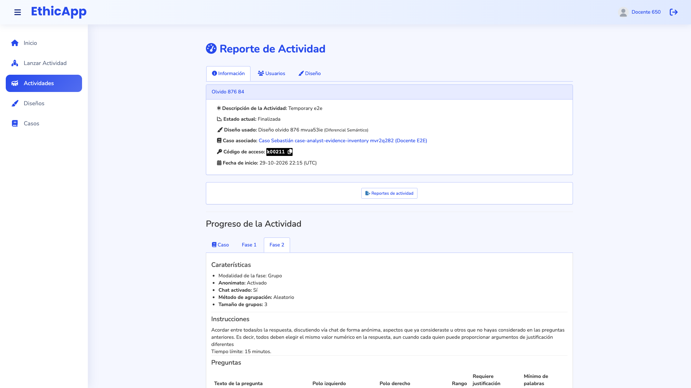
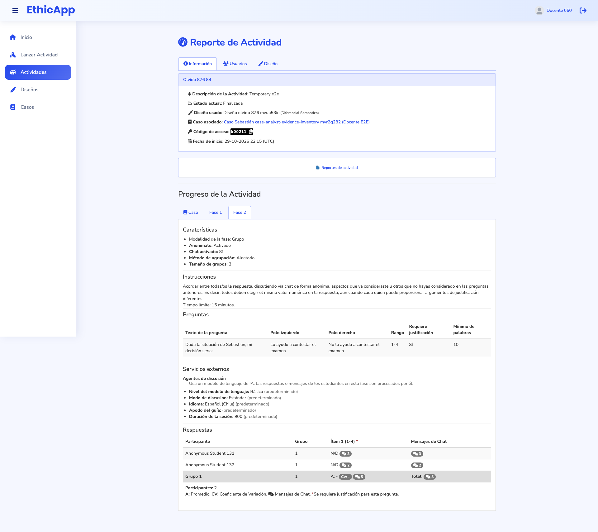

Low fidelity, for discussing how the space is shared. Each frame is drawn at its real viewport size and scaled down; the dashed line is the fold. Labels are in Spanish, as a teacher sees them in es-CL. Names are fictional.
fold (bottom of the viewport)numbered notes, explained under each frame
Decided on 2026-10-30, after the first review:
Starting the next phase always moves the view to the new phase's tab. The teacher can still open any earlier phase; the tabs never lock.
Phase changes keep today's hold-to-confirm button (held for 2.5 s), now with a tooltip that explains it.
The case is a tab of the main column; no split view of case and responses.
No presentation density for projectors. A "hide names" switch shows the table with pseudonyms instead.
The response detail opens in a side panel instead of today's modal. The second part of this page, from D on, shows it.
And after reviewing the panel:
A group's panel opens on Respuestas, as in a phase without chat. Frame E shows the Chat tab selected, to show how it looks.
Starting the next phase closes the panel. The previous phase's chat closes for the students, and each phase has its own chat, so nothing is kept from it.
"Ocultar nombres" always starts off. The teacher turns it on before sharing or projecting the screen.
Pseudonym numbers must not follow the class list. They are drawn in a random order once per activity, and while names are hidden the table is ordered by pseudonym, not by real name.
The rule for hidden names: in a phase with groups, the group letter; in a phase without groups, the number. Whether the group phase is anonymous for the students does not change it.
The letters (A, B, C…) are assigned to every group, anonymous or not, and they are drawn again for every group phase. In an anonymous phase they are what students see in their chat.
Numbers last the whole activity. Next to a letter, they would link the chat rooms of different phases. In a phase that is not anonymous, teammates who know each other's names could learn a number that identifies a classmate in every later phase.
Today

1920 × 1080, first screen: no response in sight.

1920 × 1080, whole page: responses at 1370 px, under the case, features, instructions, questions and AI services.
A. 1920 × 1080: two columns
Activity bar, sticky. Name, status, current phase, access code, connected students and the controls (start next phase, end activity; reports once finished) stay in view while the teacher scrolls the responses. The controls keep their hold-to-confirm: on hover or focus, a tooltip says "Mantén presionado 2,5 s para iniciar la fase siguiente", and while the button is held it fills from left to right. Releasing it early cancels.
Phase navigator. Replaces the case and phase tabs. Each phase shows its mode and how many students have answered; the current phase is marked. Starting the next phase selects the new phase automatically. Any earlier phase can be opened at any time.
This phase, condensed. Mode, anonymity, chat and grouping as chips; instructions clamped to three lines with "ver más"; questions numbered Í1, Í2… so they double as the legend of the table columns.
AI services and warnings of the phase: a compact line per service, with the configuration on demand. Alerts such as "service not running" also show here, not above the page.
Activity details, collapsed: description, design and case links, launch date.
Main views as tabs: Respuestas (default), Caso, Diseño, Participantes. Case, design and the connected users keep their current content but no longer sit above the responses.
Responses first. Progress (answered / participants), search, the "Ocultar nombres" switch (see E), and the table with a sticky header. A row opens the response detail in the side panel (D to F).
B. 1366 × 768: two columns, narrower
Same structure with a 260 px rail. The phase card starts collapsed to its questions; instructions and features open on demand.
The bar stays on one line: the name truncates, and the phase chip and the "conectados" label drop, since the phase navigator already shows the phase.
C. Below 1200 px wide (1024 × 768): one column
The bar stays sticky on one line with the controls, the access code and the connected count; the name truncates.
The phase navigator becomes a row of pills over the main tabs. As in the rail, starting the next phase selects its pill, and earlier pills stay clickable.
The rail cards move under the table as collapsed sections ("Esta fase", "Servicios de IA", "Actividad"), so they never push the responses down. This frame shows the whole page. Since the question legend is now under the table, each Í column header shows its question text on hover and focus.
Response detail in a side panel
Today a row opens a large modal with a static backdrop: the table disappears until it is closed. The group modal shows each question with every member's answer, then the group chat, where the teacher can write and reply. The panel keeps all of that, next to the table instead of over it.
Not modal. The table stays visible and live. Clicking another row replaces the panel's content; the selected rows are highlighted. ‹ › (and the ↑ ↓ keys) move to the previous or next group or student. Esc or × closes it.
Its own scroll. The panel is sticky under the activity bar and as tall as the viewport, so it scrolls on its own and the chat composer never leaves the screen.
Live. New answers and chat messages arrive in the panel as they do in today's modal (the existing group chat subscription).
Closes on phase change. Starting the next phase moves the view to the new phase and closes the panel. Each phase has its own chat, and the previous one closes for the students.
Same components. The answers reuse the content of today's modals, and the chat reuses the teacher-group-chat component; only the container changes.
D. 1920 × 1080: group with chat, side by side
The table narrows and stays usable: all its columns still fit, and Grupo 2's rows are highlighted.
Panel header: the group, its phase, ‹ › to move between groups, × to close. Under it, how many members answered and the chat count.
Answers, by question. Each member's value on the scale and the justification, clamped to two lines with "ver más". Members who have not answered are listed as such. The group's statistics close each question.
A splitter between answers and chat; the teacher can drag it to give the chat more room.
Group chat, live. Students, the discussion agent (yellow) and the teacher (green, on the right). "Responder" quotes a message, as today.
The composer is pinned to the bottom of the panel: Enter sends, Shift+Enter adds a line.
E. 1366 × 768: group phase, panel tabs, names hidden
The rail folds into a strip while the panel is open: the phases stay as dots and can still be selected. It unfolds when the panel closes.
"Ocultar nombres" is on, in a group phase. It always starts off; the teacher turns it on before projecting.
Letters, not numbers, in every group phase, anonymous or not. Each student shows as the letter they have in their group, "Integrante B", in the table, the panel and the chat authors. In an anonymous phase, it is the same letter the group sees in its chat.
Why letters: they are drawn again for every group phase and last only that phase.
In an anonymous phase, students who meet again in another chat room cannot recognize each other; the activity-wide number next to the letter would link those rooms.
In a phase that is not anonymous, teammates already know each other's names. With a number, they could match a teammate through the answers and identify them in every phase projected later. With a letter, they learn nothing new.
Order: rows are listed by letter within each group.
Unchanged: the teacher's own messages and the agent keep their labels.
Answers and chat as tabs inside the panel, because at 768 px of height a split leaves too little room for either. A group opens on Respuestas, as a phase without chat does; the frame shows the Chat tab to show its layout. The Chat tab shows how many messages arrived since it was last viewed.
A one-line digest of the group's values above the transcript, so the teacher keeps the answers in mind while writing.
The transcript and the pinned composer use the panel's full height.
F. 1024 × 768: individual phase, one student, names hidden
Below 1200 px the panel slides over the right part of the table, without a backdrop: the names and the first columns stay visible and clickable, so the teacher can move to another student.
One student's answers: each question with its scale, the poles and the full justification, as in today's individual modal but with a readable line length. The teacher is reviewing phase 1, an earlier phase, while phase 2 runs.
"Ocultar nombres" in an individual phase: students show as "Participante NN".
The numbers are drawn in a random order once per activity, so they do not follow the class list, and they stay the same in every phase. The teacher can still say "Participante 04" aloud.
Rows are ordered by pseudonym, not by real name: the alphabetical order would give the class list away.
Numbers are used only in phases without groups, and in the Participantes tab.
In a group phase, the panel's header line links to that student's group and its chat. With names hidden, that panel shows the letter, "Respuesta de Integrante B · Grupo 2", never the number.
Ética en la práctica · Sección 3● En cursoFase 2 de 3 · GrupalCódigo k00211 ⧉👥 28 conectados▶ Iniciar fase siguiente■ Finalizar actividadfija al hacer scroll
Fases
Fase 1 · Individual28/28
Fase 2 · Grupal
18/28
Fase 3 · Individual—
▸ⓘ✦
Esta fase ▾
GrupalAnónimoChatGrupos de 3
Instruccionesver más
Preguntas
Í1Dada la situación de Sebastián… (1–4, justif.)
Í2¿Cuánto pesa la amistad…? (1–6)
Í3¿Es justo con el resto…? (1–6)
Servicios de IA ▸
Agentes de discusión · básico · 15 min
Tutor de argumentación · avanzado
Actividaddescripción, diseño, caso, inicio ▸
RespuestasCasoDiseñoParticipantes (28)
Fase 2 · Grupal18 de 28 respondieron◐ Ocultar nombres